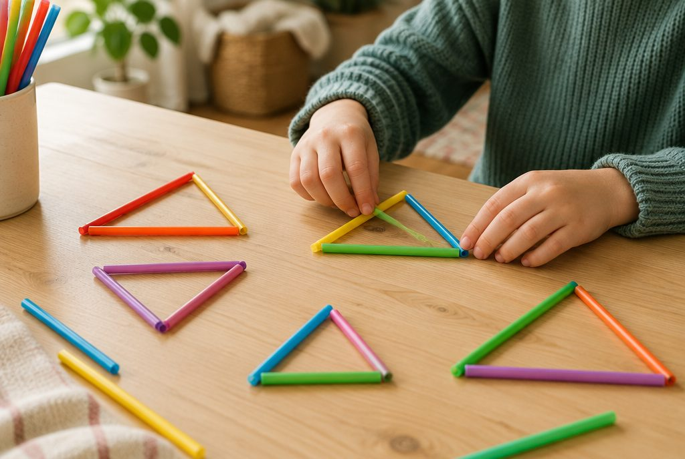

삼각형은 어떻게 나눌 수 있을까?

옷걸이, 샌드위치, 지붕 모양처럼 주변에는 여러 가지 삼각형이 있어요. 변의 길이와 각의 크기를 살펴보면 삼각형을 이름 붙여 나눌 수 있어요.
변의 길이로 나누기: 이등변삼각형과 정삼각형
두 변의 길이가 같은 삼각형을 이등변삼각형이라고 해요.
세 변의 길이가 모두 같은 삼각형은 정삼각형이에요. 정삼각형도 두 변의 길이가 같으니까 이등변삼각형이라고 할 수 있어요.
세 변의 길이가 모두 다르면 이등변삼각형도, 정삼각형도 아니에요.
변의 길이 5cm, 5cm, 3cm → 이등변삼각형 / 4cm, 4cm, 4cm → 정삼각형(이등변삼각형이기도 해요)
이등변삼각형은 두 각의 크기가 같아요
종이로 이등변삼각형을 오려 길이가 같은 두 변이 겹치도록 반으로 접어 보세요. 아래의 두 각이 꼭 맞게 포개져요.
그래서 이등변삼각형은 길이가 같은 두 변과 만나는 밑의 두 각의 크기가 같아요.
삼각형의 세 각의 합이 180°라는 것을 함께 쓰면 모르는 각을 구할 수 있어요.
이등변삼각형에서 길이가 같은 두 변 사이의 각이 40°이면 나머지 두 각은 (180° − 40°) ÷ 2 = 70°씩
정삼각형은 세 각이 모두 60°예요
정삼각형은 어느 변끼리 접어도 꼭 맞게 겹쳐요. 그래서 세 각의 크기가 모두 같아요.
세 각의 합이 180°이므로 한 각은 180° ÷ 3 = 60°예요.
정삼각형의 한 각 = 180° ÷ 3 = 60°
각의 크기로 나누기: 예각삼각형, 직각삼각형, 둔각삼각형
세 각이 모두 예각인 삼각형은 예각삼각형이에요.
한 각이 직각인 삼각형은 직각삼각형, 한 각이 둔각인 삼각형은 둔각삼각형이에요.
삼각형에는 직각이나 둔각이 두 개 있을 수 없어요. 두 개만 있어도 합이 180°가 되거나 넘어 버리기 때문이에요. 그래서 가장 큰 각 하나만 보면 어떤 삼각형인지 알 수 있어요.
70°, 60°, 50° → 예각삼각형 / 90°, 35°, 55° → 직각삼각형 / 110°, 40°, 30° → 둔각삼각형
이렇게 풀어요: 두 가지 기준으로 이름 붙이기
① 변의 길이를 보고 이등변삼각형인지, 정삼각형인지 살펴요. ② 가장 큰 각을 보고 예각·직각·둔각삼각형 중 어느 것인지 정해요.
한 삼각형에 두 가지 이름이 함께 붙을 수 있어요. 각의 크기가 30°, 30°, 120°인 삼각형은 두 각이 같으니 이등변삼각형이고, 120°가 둔각이니 둔각삼각형이에요.
세 각이 45°, 45°, 90° → 두 각이 같아 이등변삼각형 + 직각이 있어 직각삼각형
핵심 낱말
- 이등변삼각형
- 두 변의 길이가 같은 삼각형
- 정삼각형
- 세 변의 길이가 모두 같은 삼각형
- 예각삼각형
- 세 각이 모두 예각인 삼각형
- 직각삼각형
- 한 각이 직각인 삼각형
- 둔각삼각형
- 한 각이 둔각인 삼각형
한 줄 정리
- 두 변의 길이가 같으면 이등변삼각형, 세 변이 모두 같으면 정삼각형이에요.
- 이등변삼각형은 두 각의 크기가 같고, 정삼각형은 세 각이 모두 60°예요.
- 가장 큰 각이 예각이면 예각삼각형, 직각이면 직각삼각형, 둔각이면 둔각삼각형이에요.
학교 교육과정 연결
- [4수03-08] 여러 가지 모양의 삼각형에 대한 분류 활동을 통하여 이등변삼각형, 정삼각형을 이해하고, 그 성질을 탐구하고 설명할 수 있다.
- [4수03-09] 여러 가지 모양의 삼각형에 대한 분류 활동을 통하여 직각삼각형, 예각삼각형, 둔각삼각형을 이해한다.